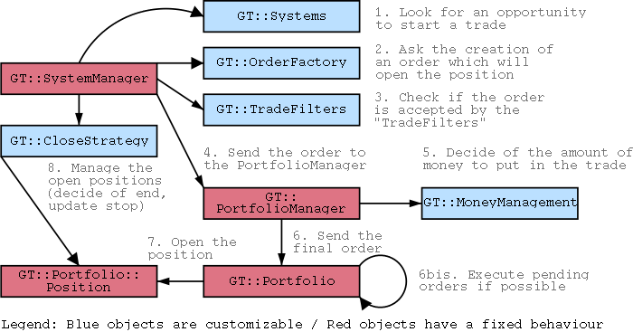

GeniusTrader aims to be a full featured toolbox to create trading systems. Powerful systematic trading requires several things :
GeniusTrader already has support of most of this. GeniusTrader consists of a bunch of perl modules associated to a few perl scripts. It has no graphical user interface since it's absolutely not needed to achieve its goals ...
Here's an example of a backtest report that GeniusTrader can generate for you (once you created your trading system by defining its rules). GeniusTrader can nevertheless generate graphics that can be used to help you create your trading system. It can generate fully customized graphics and it can also display the evolution of a portfolio during a backtest. Those graphics help a lot to realize the weaknesses of your trading systems :
What you read looked interesting and you want to try ? Okay, that's why it's free software. However let me warn you : GeniusTrader is not meant to be used by typical end-users, you should really know a bit of Perl and if you want to use it, you'll have to understand how it works (by reading the docs and the API). That said, we can help you in that direction... you'll find everything needed below.
The code is managed via CVS. You can always download CVS tarballs (generated on the fly) :
The CVS repository is available via anonymous access:
$ export CVSROOT=:pserver:anonymous@geniustrader.org:/srv/geniustrader.org/cvs $ cvs login [ empty password ] $ cvs co GT Scripts
You can also browse the CVS tree online. You can use the code under the terms of the General Public License (version 2 or, at your option, any later version).
Once you have the code you still have to go through some steps to have a working installation to play with. Follow the instructions.
GeniusTrader is already usable but it still evolves at a rapid pace with regular changes resulting in breakage in other parts of the code. Contributions are always welcome because we always have more ideas than time to implement them. :-)
Beware: I added spaces in the emails below to avoid a bit of spam.
The coordination of the development happens on a mailing list (devel @ geniustrader.org). You're invited to join and to participate in the discussions. Just send "subscribe devel your@email" to sympa @ geniustrader.org. That's where you submit patches and ideas for improving GeniusTrader. Also you can probably find some help over there (in particular if you want to contribute later)...
If you're not interested in the development of GeniusTrader but you have a strong interest in systematic trading, then you're welcome to join system-traders @ geniustrader.org where you can exchange your ideas and research with other people. To subscribe to it, please send "subscribe system-traders your@email" to sympa @ geniustrader.org.
Both lists are archived on the web:
There is no good documentation giving an overview of GeniusTrader internals. However each object is documented in the source code (with POD) and you can browse the API to learn more about it. In order to help you have a global view of GeniusTrader before digging into it, you can watch this schema:

You should also know that each customizable object has access to various informations including many indicators, signals and whatever can be computed with history of prices and volume (and possibly some external meta-data information). Keep in mind that this representation of GeniusTrader's architecture is incomplete and is not always 100% accurate (some simplifications have been made), but it gives you a good overview of how things are working together.
Have fun, we hope to see you soon, we'd enjoy your contribution !